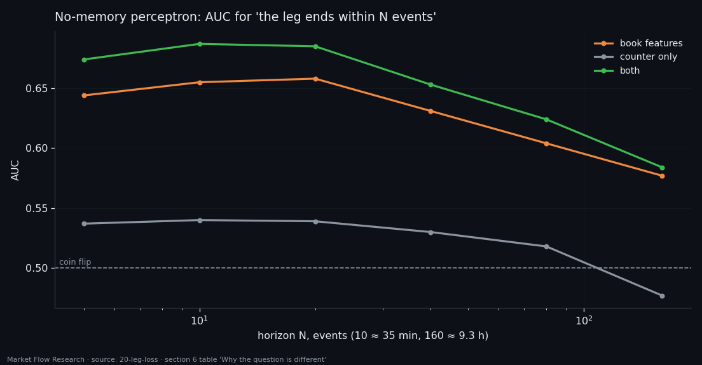
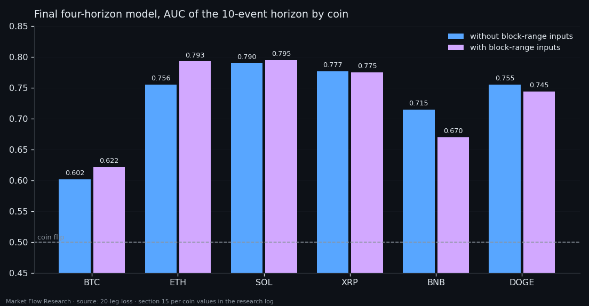
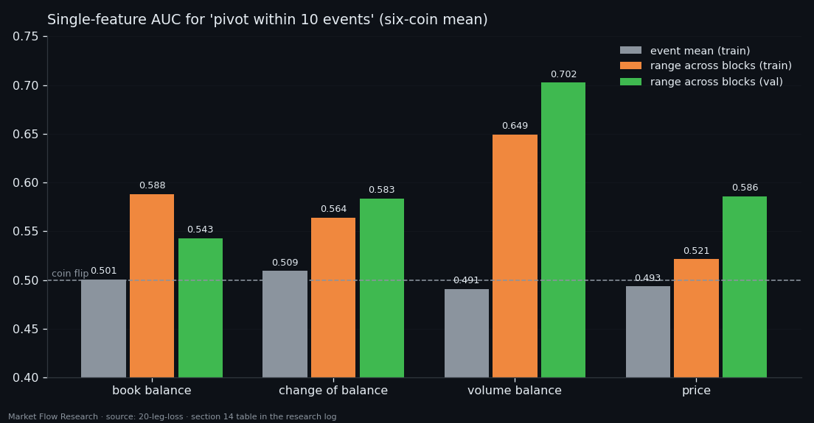

Change the Question, Not the Network — "Will the Leg End Soon?" Scores 0.73 Where "Which Tenth?" Scored Nothing
The memory network of the previous study learned to count instead of reading the market. We opened its loss function and found why: counting was the exact optimum. Then a plain perceptron settled it — the 60 order-book numbers of an event carry zero information about which tenth of the leg it sits in. They do carry information about something else: whether a pivot is close. Rebuilt around that question — four horizons, one monotone curve — the same data scores an average AUC of 0.73 across six coins. The order book shows the exhaustion of a move. It still does not show its direction.
① The loss never asked for class 10
Study 19 ended with a network that never once called the end of a leg on 42,192 events. Rather than tune it, this study looked at what it was minimising. The loss rewarded a staircase that never jumps and never goes back — and its minimum is reached by any non-decreasing sequence with steps of at most one, including a constant. With a label defined by the leg's total length (known only to the zigzag) and a loss that never demands reaching the top, a steady count from a known start is not a training failure. It is the exact optimum of that pair.
The repairs were done properly anyway. A model-driven reset gave no learning signal, because `if said == 10` has no gradient; soft gates `h ← h·(1 − p₁₀)` fixed that. An overfit test on 2,000 events proved the training loop works (similarity 0.942). On the full series nothing moved.
Then the decisive check, with no memory at all: a two-layer perceptron, event → tenth, legs never split across train and validation. The 60 book features alone: 0.2927 similarity, 0.107 accuracy — exactly random. A single integer, events since the leg started: 0.5625. Both together: slightly worse than the counter alone. Knowing the elapsed time removes 39% of the uncertainty about the tenth; nothing in the data removes the rest, because a short leg's second tenth and a long leg's first are indistinguishable at the moment you are in them.

② Ask "is a pivot close?" — and the features wake up
The tenth of a leg is defined by its full length. "A pivot is close" is a local property of price, visible from the event itself. Same perceptron, same features, same legs: the question "does the leg end within the next N events" gives AUC 0.644–0.658 for N = 5–20 on the features alone, while the counter drops to 0.54. The roles swapped: on this target the market does the work and time adds little. The signal is strongest on short horizons; wider windows pull more of the leg's middle into the label.
So the network was rebuilt to answer this question. Four outputs — P(ends within 10), 40, 160, 640 events — form one monotone curve, a distribution of "events left", guaranteed non-decreasing by construction (each output is a conditional hazard on top of the previous). The fourth horizon is there for a reason: with only three, 73% of events fall into the "more than 160" tail where every estimate collapses to one number; adding 640 raises the ceiling of the method from 0.765 to 0.951.

③ One small validation set almost hid the result
For several sections the reference number was an AUC measured on BTC after the split date: 3,800 events, six pivots. The one-horizon model scored 0.604 there. Run on all six coins, the same model averaged 0.710 — BTC was the worst of the six, not the typical one. Then a better-looking epoch appeared, 0.703 on BTC; on six coins it was 0.051 worse, collapsing by two tenths on SOL and XRP. With six pivots, the maximum of AUC over epochs is mostly noise.
The fix: choose the epoch by the mean AUC of all six coins after the split — 28,870 events and 63 pivots. Under that rule a hyperparameter grid that promised +0.073 on reduced data delivered +0.010 on full data, and the four-horizon model beat the single-horizon one on the same question (0.733 vs 0.720 on the shortest horizon; 0.742 averaged over horizons; the 640-event horizon alone 0.799). Memory helps, but modestly: +0.022 over the memoryless net on the same split. The pooled AUC over all coins (0.76) is inflated by differences between coins, so the per-coin mean is the honest number — and coins cannot be ranked against each other by AUC, because the label is far more frequent on some.

④ What the event shows before a pivot: uniformity
Which part of the event carries the signal? Averages carry nothing: 0.49–0.52 for every feature. The range across the 15 blocks of the event does — volume balance alone scores 0.649 on train (0.702 on validation), against 0.733 for the whole memory network. Before a leg ends, the event becomes internally uniform: its 14-second blocks stop differing. That is what "exhaustion of a move" looks like in this data. Top and bottom pivots show it equally (0.655 vs 0.645 on 600 train pivots; the apparent gap on 63 validation pivots is sample size).
Feeding the range explicitly adds nothing (−0.004 mean), because the network already builds it from the same blocks. Two more questions complete the picture. A mirror detector — "a pivot happened within the last N events" — is harder (0.612), because the evidence sits in memory and the network does not hold a count from a pivot it has to recognise itself. And direction: "will the next pivot be above the current price" gives 0.563, with memory adding 0.001. The model's own resets never fired once in the whole study. The order book shows that a move is running out; it does not show which way the next one goes.

Reproduce this study
- Research log (.md, Ukrainian): goal, data, plan, scripts, every confirmed stage and table — enough to rerun the study
- Reproduction kit (.zip): the study's scripts, project rules and base scripts that build every class
If this changed how you read the tape, the natural next step is Volume Is the Fuel — Not the Steering Wheel — We recorded the Binance order book every second for six coins over five months and ran eighteen tests on what volume really does.
Volume Is the Fuel — Not the Steering Wheel
We recorded the Binance order book every second for six coins over five months and ran eighteen tests on what volume really does.
About Market Research Lab — What We Collect and Why
Most market commentary is storytelling.
From Calm to Calm: a Standard for What Counts as a Signal (BTC)
We stopped defining market signals with a stopwatch.
The Wall That Goes Quiet: What Resting Liquidity Predicts
We measured resting limit liquidity sitting on both sides of the book second by second across six coins, and asked the only question that matters:….
Comments
Discussion is powered by GitHub. Enable it by adding secrets/giscus.json (repo IDs from giscus.app).